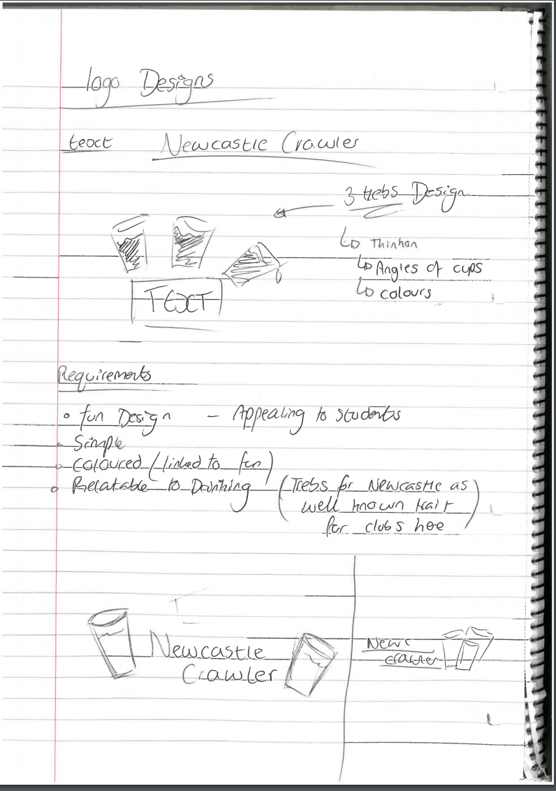
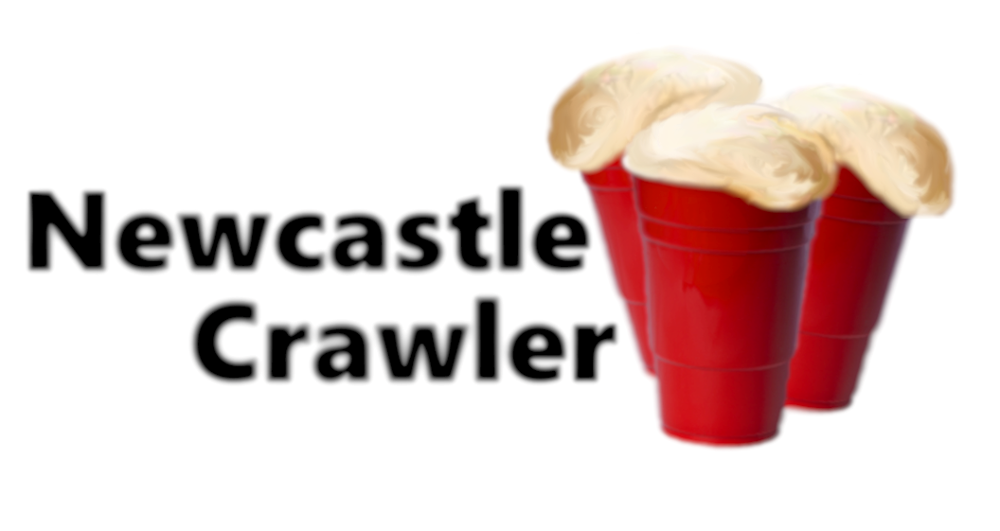
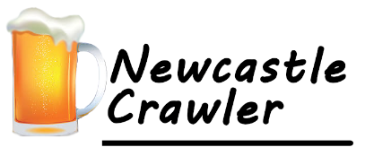
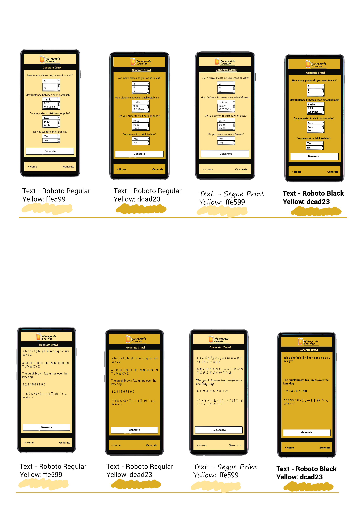

Logo Design
The general idea theme that people thought would be good to implement into my logo was something to do with the classic American red beer cups that people know are linked to drinking. In addition, from my pitch one factor that people mentioned that would be great to implement and base off was something to do with Newcastle trebles as the bar crawl app is set in Newcastle. From all this I finished up creating the following in Photoshop as a final design for a logo, the foam has been drawn by hand as I thought it would give a better look, however one criticism picked up is the fact that they look like similar bread loafs.
After the original design for the logo I received some feedback about the looks and feels of it. The main feedback received was more negative, so I started from scratch. I worked with a couple friends and came to the final design shown below, which received much better feedback for being simpler and more appropriate. This design just uses a beer mug and some text which colour scheme I am going to base the rest of the app with to match nicely.
MoodBoard
To create the mood board I used a tool online called adobe spark Some of the topics I searched were the following: Beer, Drinks, Neon, Newcastle, Cocktails, Bar Lights, Bar

Wireframe Mockups
After creating simple paper mock-ups, I transferred the drawings into a wireframe tool that I had previous experience with to get a more valuable feeling of the final design for the mobile app. I was able to do this by adding a simple colour scheme. I started with the home page of the app; this is where the users current bar crawl is located. In my designs I went for a look that showed the necessary information that others told me was enough and in the best style (As discussed in my paper mock-ups). I then went on to create a copy of the paper mock-ups into balsamiq and some very basic linking to get a feel of moving around the app. With the app looking like this I feel I was able to get a final Idea on how I wanted thing to look in the end.
Click Here to View Full StoryBoardFontBoard
For the font board I tried to keep the fonts in the designs very simple and easy to read. I personally really appreciate and like the Roboto font, so I mostly played around with this font even if it is the default. In the fontboard I showed how the font would look in the environment of the application, the text and how it looks with the choice of text.
Prototyping
Here I created my first prototype of the applicaion, the main purpose for this version was to create something that just functioned correctly. When a crawl is generated the layout on the right-hand side is what users will see. This follows the ideas that were created back in the initial drawing stage of the project. The idea is that the users don’t see an actual location, but they just click on the link that opens it up on google maps. A quick navigation bar was tested using a source on github as the template


The second version of the prototype aimed to clean up and provide a more User friendly experience for potential users. The main new change was a clean navigation bar located at the bottom of the mobile application. In addition to this an explore page was added for users to browse a list of all the pubs and bars available in this applications database. Below are some images to show the final copy of this prototype and where the project currently lies until I return to perhaps move to market.